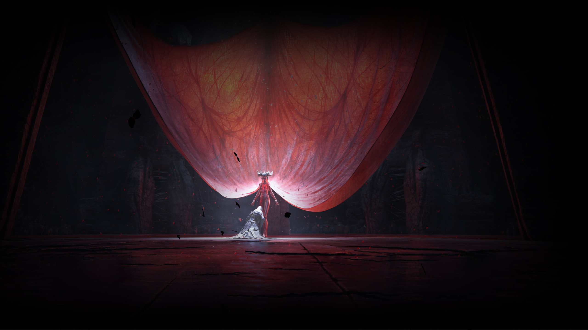
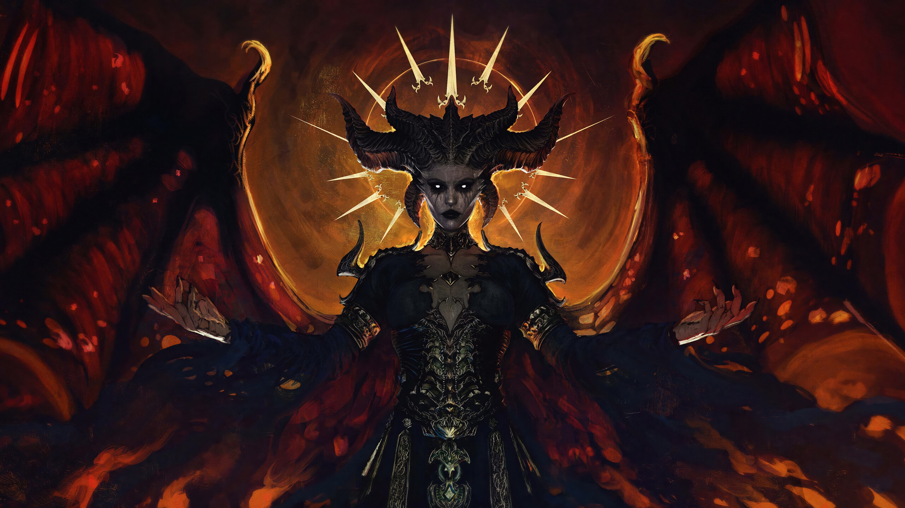
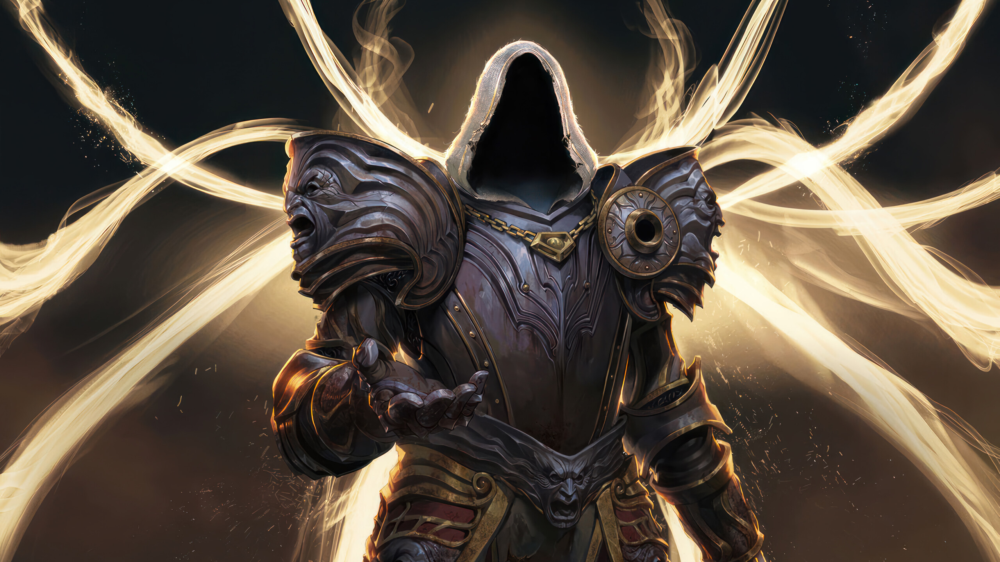
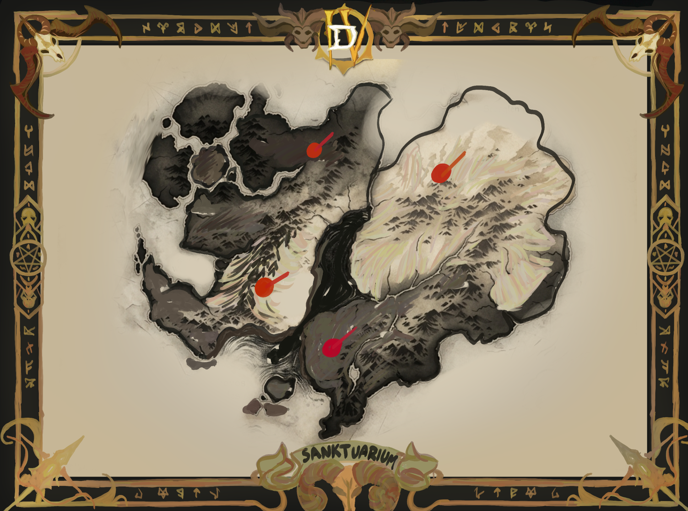
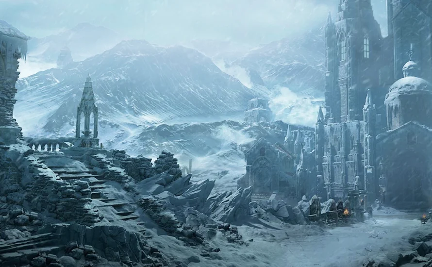
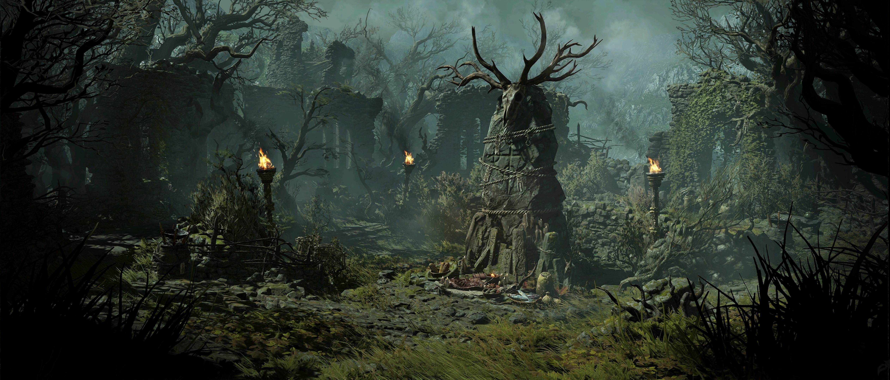
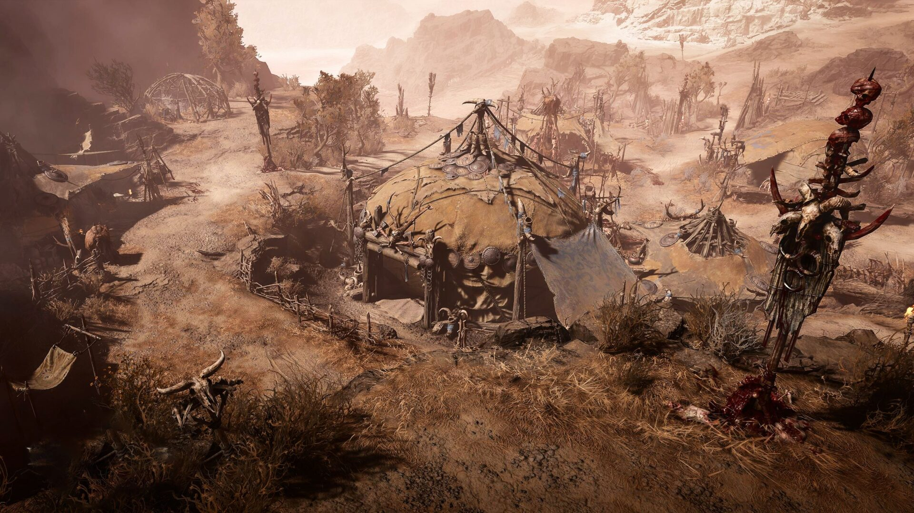
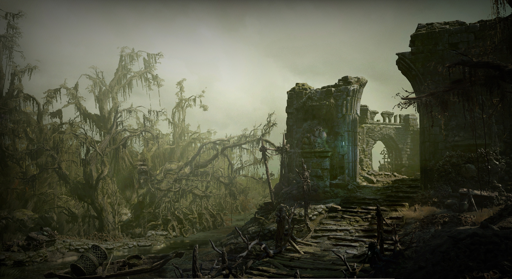

Poznaj historię Wiecznego Konfliktu.

Od zarania dziejów Wysokie Niebiosa i Płonące Piekła toczyły ze sobą bezwzględną wojnę, znaną jako Wieczny Konflikt. Aniołowie, uosabiający czysty porządek, oraz demony, będące chaosem i destrukcją, walczyli o kontrolę nad Kamieniem Świata – artefaktem o niewyobrażalnej mocy tworzenia.
Wojna ta wydawała się nie mieć końca, a obie strony były wycieńczone tysiącleciami nieustannej rzezi. Wtedy narodził się bunt. Grupa renegatów z obu obozów, zmęczona bezcelowym rozlewem krwi, postanowiła ukraść Kamień Świata i stworzyć bezpieczną przystań, ukrytą przed wzrokiem przedwiecznych potęg.

Lilith, znana jako Córka Nienawiści i potomkini Mefista, jest kluczową postacią w historii Diablo IV. To ona, wspólnie z aniołem Inariusem, skradła Kamień Świata i stworzyła Sanktuarium – schronienie dla zbuntowanych aniołów i demonów.
Z zakazanego związku Lilith i Inariusa narodzili się Nefalemowie, prekursorzy ludzkości, obdarzeni potężną mocą przekraczającą siłę ich rodziców. Gdy inni renegaci zaczęli obawiać się potęgi swoich dzieci i postulowali ich zgładzenie, Lilith wpadła w szał i zamordowała wszystkich pozostałych buntowników. Wygnana przez Inariusa do Pustki, powraca teraz w Diablo IV, by upomnieć się o swoje mroczne dziedzictwo.

Inarius to potężny archanioł, który niegdyś służył w Radzie Angiris pod dowództwem Tyraela. Zmęczony wojną, sprzymierzył się z Lilith. Po buncie swojej partnerki i jej wygnaniu, Inarius przejął całkowitą władzę nad Sanktuarium i osłabił moc Nefalemów za pomocą Kamienia Świata, zmieniając ich w śmiertelnych ludzi.
Ostatecznie został schwytany przez Najwyższe Zła i oddany swojemu odwiecznemu wrogowi – Mefistowi – na wieczne katusze w Piekle. W Diablo IV Inarius ucieka z niewoli i powraca do Sanktuarium jako przywódca Katedry Światła. Za wszelką cenę pragnie odkupić swoje winy w oczach Niebios, wierząc, że zgładzenie Lilith pozwoli mu powrócić do domu.
Świat Diablo IV jest rozległy, bezwzględny i mroczny, stworzony z unikalnych krain.


Mroźne, pokryte wiecznym śniegiem góry, w których schronienie znaleźli religijni fanatycy z Katedry Światła. W jaskiniach i podziemnych ruinach czają się pradawne bestie, a wiatr niesie szepty potępionych.

Zielona, lecz niezwykle deszczowa i ponura kraina zamieszkana przez Druidów. Gęste, mgliste lasy skrywają potwory zrodzone z wypaczonej natury oraz klany dzikich, krwiożerczych Kozłoludów.

Kamieniste pustkowia i kaniony ogarnięte wojną domową, gdzie woda jest cenniejsza niż złoto. To tutaj grupy kanibali oraz kultyści Lilith toczą boje o przetrwanie i władzę nad ruinami przeszłości.

Trujące, zdradzieckie bagna pełne jadowitych węży, wiedźm i przestępców szukających ucieczki przed prawem. Ciemna magia unosi się nad bagnami, a każdy fałszywy krok w głąb moczarów grozi śmiercią.
Sanktuarium nie jest miejscem dla bohaterów; to rzeźnia, w której ludzkość walczy o każdy kolejny dzień.